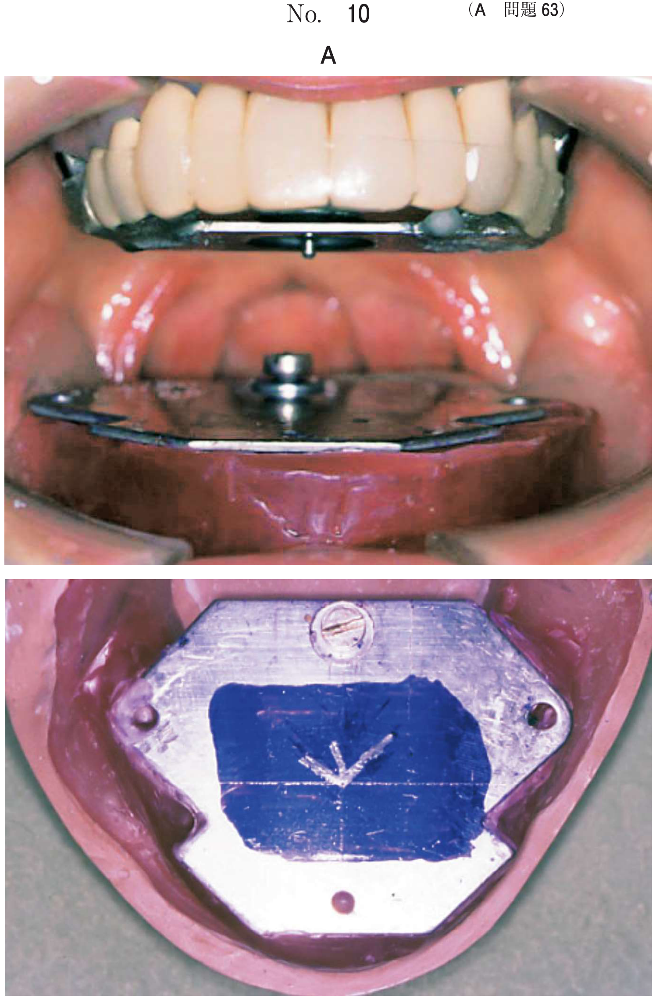
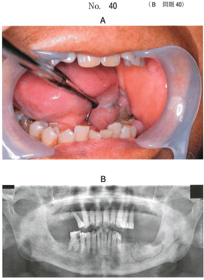
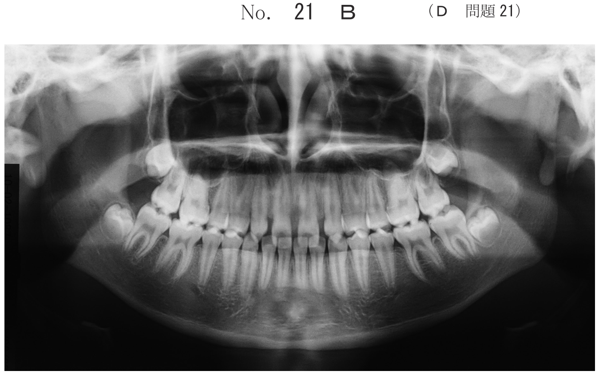

BRONJ・ARONJ（薬剤関連顎骨壊死）
用語の変遷
| 略称 | 正式名称 | 範囲 |
|---|---|---|
| BRONJ | Bisphosphonate-Related Osteonecrosis of the Jaw | BP製剤に関連した顎骨壊死 |
| ARONJ | Anti-Resorptive Agent-Related ONJ | BP製剤＋デノスマブ（抗骨吸収薬） |
| MRONJ | Medication-Related ONJ | BP製剤＋デノスマブ＋血管新生阻害薬など全薬剤 |
2023年のポジションペーパーではMRONJ（薬剤関連顎骨壊死）が公式用語として採用された。
診断基準
- 骨吸収抑制薬（BP製剤等）の投与歴がある、または投与中である
- 顎顔面領域に壊死骨の露出が8週間以上持続している
- 顎骨に放射線照射の既往がない
放射線照射の既往がある場合は「放射線性骨壊死」であり、BRONJではない。
BP製剤の種類とリスク
| 剤型 | 代表的薬剤 | 主な適応 | 顎骨壊死リスク |
|---|---|---|---|
| 注射薬 | ゾレドロン酸（ゾメタ）、パミドロン酸（アレディア） | 悪性腫瘍の骨転移、高カルシウム血症 | 高い（0.8〜12%） |
| 経口薬 | アレンドロン酸（フォサマック/ボナロン）、リセドロン酸（アクトネル/ベネット） | 骨粗鬆症 | 低い（0.01〜0.04%） |
注射薬は経口薬の約100倍のリスクがある。悪性腫瘍に対して使用されることが多い。
病期分類（ステージ）
| Stage | 所見 | 治療 |
|---|---|---|
| At risk | 抗吸収薬/血管新生阻害薬の投与歴あり、骨露出なし・症状なし | 患者教育、口腔衛生管理、侵襲的処置の回避 |
| Stage 0 | 骨露出なしだが、非特異的症状・画像所見（疼痛、骨硬化など）を認める | 対症療法、感染管理、厳密な経過観察 |
| Stage 1 | 無症状で感染を伴わない骨露出・骨壊死 | 抗菌性含嗽剤、経過観察 |
| Stage 2 | 感染を伴う骨露出。疼痛、発赤、排膿 | 抗菌薬投与、局所洗浄、腐骨除去 |
| Stage 3 | 感染＋以下のいずれか：病的骨折、外歯瘻、口腔上顎洞瘻、下顎下縁までの骨融解 | 外科的治療（腐骨除去＋顎骨切除） |
発生機序とリスクファクター
発生機序
- BP製剤が破骨細胞の機能を抑制→骨吸収が低下
- 顎骨は咀嚼により常に微小骨折が蓄積→正常なら骨リモデリングで修復
- BP製剤により骨リモデリングが抑制→微小骨折が蓄積→骨の脆弱化
- 抜歯などの侵襲により口腔細菌が感染→顎骨壊死
リスクファクター
- コルチコステロイド療法の併用
- 糖尿病、喫煙、飲酒
- 口腔衛生不良
- 化学療法の併用
- 注射薬は経口薬より高リスク
BP剤服用患者への歯科対応
BP製剤投与前の患者
- BP製剤投与開始前に口腔管理を完了させる
- 必要な抜歯・歯周治療・義歯調整を先に行う
- 治癒を確認した後にBP製剤の投与を開始する
- 骨侵襲の大きなインプラント治療は避ける
BP製剤投与中の抜歯時の留意点
- 術前の十分な消炎：感染リスクを最小限にする
- 抜歯窩の骨鋭縁の除去：粘膜への刺激を防ぎ、骨露出を予防
- 周囲軟組織による抜歯窩の閉鎖：骨の露出を防ぐ
副腎皮質ステロイド薬の投与はリスクファクターであり行わない。2023年PPでは抜歯時の休薬は原則不要とされている。
インプラント希望患者の確認事項
- 乳癌等の悪性腫瘍の既往がある場合：転移・再発の有無とBP製剤投与歴を確認
- BP製剤投与中・投与歴がある場合→インプラントは原則禁忌
BRONJの治療
- At risk：患者教育、定期的口腔管理、侵襲回避
- Stage 0：疼痛管理、感染管理、経過観察
- Stage 1：抗菌性含嗽剤、経過観察
- Stage 2：抗菌薬投与（3週間程度）、局所洗浄、腐骨除去
- Stage 3：外科的治療（顎骨切除を含む）
- 放射線治療は適応ではない
- 副腎皮質ステロイド薬はリスクファクターであり治療には使用しない
過去問で実力チェック
68歳の女性。下顎左側犬歯の補綴装置脱離を主訴として来院した。2年前から骨粗鬆症のためビスホスホネート製剤を内服しているが、他に特記すべき既往歴、服薬歴、喫煙歴、過度の飲酒歴および肥満はない。「3は動揺と打診痛があり、排膿を認める。内科医と相談のうえ抜歯することとした。初診時の口腔内写真（別冊 No.16A）とエックス線画像（別冊No.16B）を別に示す。
抜歯に際して行うべきなのはどれか。3つ選べ。

b 抜歯窩の骨鋭縁の除去
c 副腎皮質ステロイド薬の投与
d 周囲軟組織による抜歯窩の閉鎖
e ビスホスホネート製剤の6か月間の休薬
【解説】BP製剤服用中の抜歯では、BRONJ予防のために術前の十分な消炎、骨鋭縁の除去、軟組織による抜歯窩の閉鎖を行う。骨の露出を防ぐことが重要。副腎皮質ステロイド薬はBRONJのリスクファクターであり投与しない。2023年PPでは抜歯時の休薬は原則不要とされており、6か月間の休薬は必須ではない。
48歳の女性。インプラント治療を希望して来院した。5年前に乳癌の手術を受け、現在も通院しているという。医療機関から診療情報提供を受けることとした。
インプラント適用の判断で確認すべき情報はどれか。2つ選べ。
b 乳癌手術の術式
c 転移・再発の有無
d ビスホスホネート製剤投与歴
e 乳癌手術前の腫瘍マーカーの値
【解説】乳癌患者がインプラントを希望した場合、転移・再発の有無（骨転移があればインプラントは禁忌）とBP製剤投与歴（BRONJ発症リスクの評価）を確認する必要がある。入院期間や手術術式、術前の腫瘍マーカー値はインプラント適用の判断には直接関係しない。
65歳の男性。左側の下顎臼歯部からの排膿を主訴として紹介来院した。2年前から前立腺癌の再発と骨転移のために、ビスホスホネート製剤を定期的に投与されているという。同部から排膿を認めた。口腔内写真（別冊No.40A）とエックス線写真（別冊No.40B）を別に示す。
適切な対応はどれか。すべて選べ。

b 局所洗浄
c 抗菌薬投与
d 下顎骨への放射線治療
e 副腎皮質ステロイド薬投与
【解説】BP製剤投与中にBRONJが発症した症例。排膿を伴うStage 2に該当し、腐骨除去、局所洗浄、抗菌薬投与が適切な対応である。放射線治療はBRONJの治療法ではない。副腎皮質ステロイド薬はリスクファクターであり投与しない。
75歳の女性。下顎の腫脹を主訴として来院した。1か月前から下顎右側に時々自発痛があったが放置していたところ、2週前から腫脹が生じてきたという。体温は37.8℃で倦怠感がある。5年前に乳癌の切除術を受けたが、2年後に肋骨に転移したため、骨破壊を抑制する薬物が投与されている。初診時の顔貌写真（別冊No.33A）、口腔内写真（別冊No.33B）及びエックス線写真（別冊No.33C）を別に示す。
発症の誘因として考慮すべきなのはどれか。2つ選べ。



b 顎骨壊死
c 下顎骨骨折
d 線維性異形成症
e 乳癌の下顎骨転移
【解説】乳癌の肋骨転移に対して「骨破壊を抑制する薬物」（BP製剤）が投与されている患者の下顎腫脹。考慮すべきは顎骨壊死（BRONJ：BP製剤による）と乳癌の下顎骨転移である。両者の鑑別には生検が重要。骨隆起は無症状の骨性膨隆であり腫脹・疼痛を伴わない。線維性異形成症は若年者に好発する。